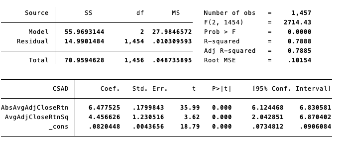
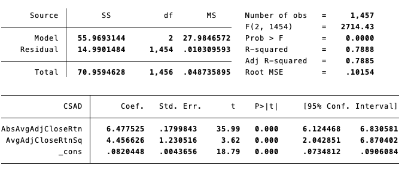

Is there evidence of herding in financial markets?
Since the conception of Financial Markets there has oftentimes been debate over whether these markets operate efficiently and whether they do so in a manner that is congruent with the Efficient Market Hypothesis. Scholars such as Bikchandi (2000) and Spyrou (2013) have speculated that an explanation as to why Financial Markets sometimes do not operate according to this principle can oftentimes be rooted in herding behaviour. Herding occurs in finance when investors follow the crowd instead of their own analysis. Historically, it is attributable to starting large market rallies and sell offs that are often based on a lack of fundamental support to justify either. Therefore, through a series of visualisations I will show instances of herding, the effect of herding and whether herding can actually be empirically proven in less traditional markets such as the cryptocurrency market.
In the field of behavioural economics scholars often stress that herding behaviour can often be attributed to causing and fuelling market crashes in finance. Thus, for my first piece of analysis I have chosen to scrutinise the most recent financial crash that was associated with the outbreak of Covid-19. Figure 1 displays the stock price of 5 major stock indexes ranging from pre to post Covid-19 outbreak. From this one is able to see that each indexes price plummets when Covid was officially declared a global pandemic in March of 2020.
The link to the code used to create the graph and extract data from yfinance can be foundhere
Figure 2: A graph demonstrating how volume of trade and price change interact in times of uncertainty.
Football chart
 
